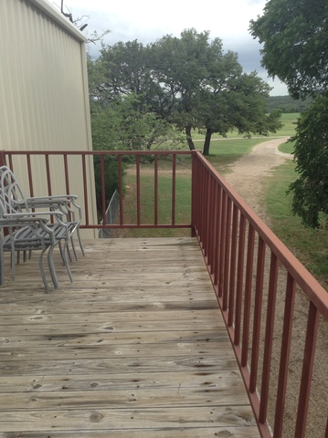
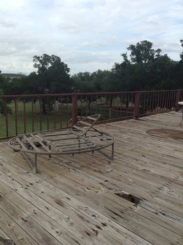

It's odd to think it's only been a week here. It really feels like I've been on the farm for much longer, possibly because I've been so busy while I'm here.
My first assignment was to help a doctor in Northern Africa for a field worker who had been sick with a parasite for three weeks. The country he was living in relied mostly on pharmacists for their medical needs, and none of their remedies helped. Fortunately, G3S2 had some contacts in that part of the world, and he had a good recommendation for a doctor. Although I didn't do any "searching," per se, I did get much better at writing emails. I was the main communications channel between here and there. I was really excited to hear that he made it to the doctor and had a follow-up visit scheduled for a few days down the road!
This last week I've also had my fair share of weird hardware come through my workspace. An old printer that refused to connect to the network (fixed with a crossover cable, for those who still remember those), an analog-to-VoIP phone adapter to reconfigure, and a Dell computer that couldn't find its toolbar all showed up to be fixed. (Two of those three are.)
We went to the Horny Toad Bar & Grill down the road on Wednesday night for the weekly pool tournament. I played terrible, but enjoyed myself anyway. The restaurant is known for its jalapeño buns, which are just spicy enough to be delicious. It's also known as the only restaurant in the town of Cranfills Gap, so it gets pretty good patronage from the surrounding area. After I lost, I played rummy with Mrs. Wallace, who picked up the game quite quickly for never having played before. (She beat me quite badly.) And Loren Bradley, another worker here, got second place in the pool tournament! (Pictures of him and his wife next week, perhaps?)

I've been really astounded by the beauty of the night sky here. When we went to camp near Hunt, Texas, I thought the stars couldn't get any brighter. Well, I think it's even darker here than it was there, so the stars shine even brighter. Something you lose about the stars in brighter areas is their depth: it's not just how many of them there are that impresses you, but how far back they go. It's the phenomenon that happened when the 3DS came out with video games. Something that used to be flat becomes infinitely layered. There are shooting stars every ten minutes or so. It makes you really appreciate God's promise to Abraham when you can see all of the stars that he could have numbered for future members of his family. Here are some pictures of my favorite star-watching spot, in the daytime when my imperfect iPad camera can capture it.
 
Today at First Baptist Church at Cranfills Gap, the new pastor and his wife got a good "pounding." Apparently, it comes from wedding gifts, where everyone would bring a pound of something for the new couple. Now they have poundings for other events, including welcoming in newcomers. The church had a good time welcoming in Pastor Dustin and his family, and I learned about a fun tradition.
This week I'm gearing up to configure a complete reboot of the G3S2 phone server. We did two full backups over the last couple days (one of the data to my laptop and an exact clone on an extra hard drive), and I'm testing new builds on my computer in virtual machines before I start messing around with the actual system. (A virtual machine is like running a separate computer system within your own computer, usually used for testing purposes or for isolating certain tasks as a separate server.) I'm finding out that a simple upgrade isn't going to be as easy as I'd hoped. There may be a few extremely late nights before this is over. (At least once, when I actually do the upgrade.) I've got about a week to prepare for that day, though.
Until then, I'll be doing more studying, more testing, and more Rubber Duck debugging. (It often works quite well.) (Here's the Wikipedia, just in case.)